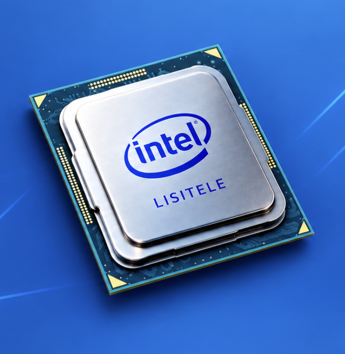

Our Sustainability Timeline
Intel Founded
Intel was founded and began its journey in technology and innovation.
First Microprocessor
Intel introduced the world's first commercially available microprocessor.
8086 Processor
The 8086 processor became an important milestone in computer technology.
Environmental Efforts
Intel expanded its environmental programs and focused on reducing its impact.
Sustainability Goals
Intel continued developing ambitious goals for energy, water and waste reduction.
Intel Products & Technology
Intel supplies microprocessors for many manufacturers of computer systems and is one of the developers of the x86 series of instruction sets found in many personal computers.
Intel also manufactures chipsets, network interface controllers, flash memory, graphics processing units (GPUs), and other devices related to communications and computing.
Microprocessors
Processors used in computers and other computing systems.
Graphics Processing Units
GPUs designed for graphics, gaming and computing.
Network Controllers
Technology that helps computers connect and communicate.
